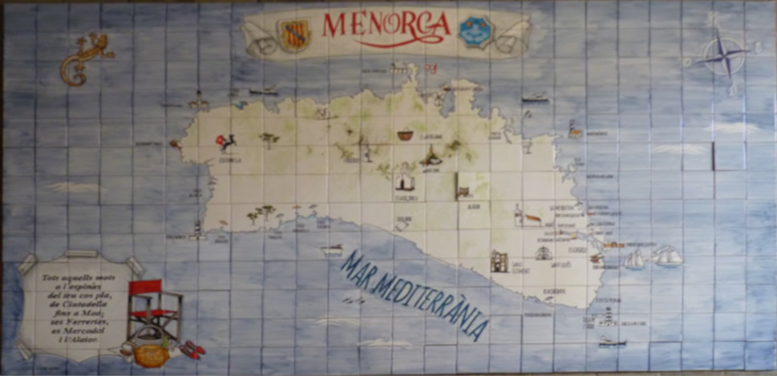

Imágen editada
- Paso 1:
-
Hemos rotado la imagen y cambiado su perspectiva para que quede perfectamente recta.
- Paso 2:
-
Tras esto hemos recortado la imagen para que cuadrar más el mapa.
- Paso 3:
-
Finalmente hemos guardado la imagen.
Imágen del mapa de Menorca
Imágen original

Imágen editada
